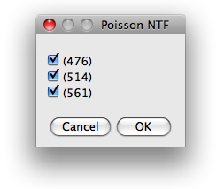
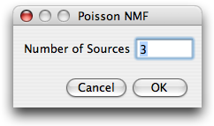
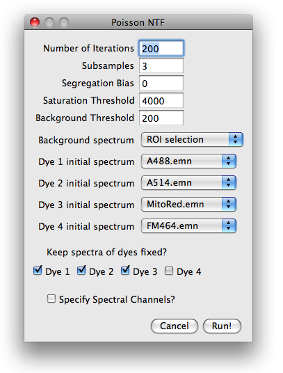
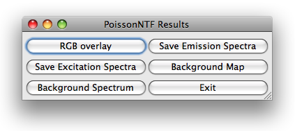

PoissonNTF - blind source separation of fluorescence microscopy data
Table of Contents
- Introduction
- Installation
- Data
- Workflow
- Spectra Library
- References
Back to the main page.
PoissonNTF is an extension of the PoissonNMF plugin for ImageJ.
In contrast to the NMF plugin, NTF combines the data from multiple
excitations. Multiple excitations allow to image and decompose more
fluorophores than single excitation imaging. As PoissonNMF, PoissonNTF
employs a non-negative factorization algorithm generalized to higher dimensional data sets
(Tensors) [1].
The details of the algorithm are discussed in [2].
Step-by-step tutorial using an example with 3 dyes can be
found here.
To install the plugin, copy the PoissonNTF_.jar file into the plugin folder of
your ImageJ distribution. PoissonNTF uses the same library of spectra as PoissonNMF,
see below.
For this feature to work, the spectra have to be saved in a folder named SpectraLibrary
at the top level of the plugins folder of the ImageJ distribution.
top
As of now, PoissonNTF works only for data acquired with Leica confocal microscopes (and has only
been tested for Leica SP2). The user is expected to choose one image from the experiment. The
plugin then reads the accompanying text file with the settings and builds stack of images for each
excitation. The channel and excitation wavelength are read from the
meta data in the Leica text file. It is important that the emission channels used in the different
excitations overlap and that the overlapping channels have exactly the same boundaries.
Example:
Excitation 1: 470-490nm, 490-510nm, 510-530nm, 530-550nm.
Excitation 2: 510-530nm, 530-550nm, 550-570nm, 580-610nm.
top
The workflow of Poisson NMF is very similar to PoissonNMF. Upon starting the plugin,
the user has to choose which kind of data he/she wants to analyze. Currently, only
Leica data is implemented. The user has to select one of the images of the experiment, and
the plugin will open all relevant images and group them into stacks according to excitation
wavelength. After opening of the images, the user is guided through a series of dialogs.
top

The first dialog presents the excitation wavelength found in the configuration file and
offers the choice which of them are to be used for further analysis.
Next, the user is asked for the number
of labels that contribute to the image stack. This number is restricted to the range
1-10.
top

After specifying the number of sources, the user is prompted for parameters
needed for preprocessing of the data, initial conditions and runtime options.
Number of iterations and subsampling.
To speed up convergence, the poissonNMF applies the update rules in several stages
to subsamples of the data. The estimates for the spectra obtained with one subsamble
are used as initial conditions for the next larger subsample. The number of such stages can be specified in
subsamples field. From one subsample to the next, the amount of data used by the algorithm
is increased by a factor of 10 in such a way that the last subsamples comprises the entire data set.
The total number of times the iterative update rules are applied to the data can also be specified.
The number of iterations for larger subsamples is smaller (a factor 2 between successive subsamples).

Segregation bias. The segregation bias is mainly indended for PoissonNMF with only one excitation.
It can, however, be used in an analogous manner in NTF and multiple excitation and is this option
is therefore retained in PoissonNTF. We did not test this feature in detail.
As for NMF, the segregation bias should counteract the tendency of the algorithm to estimate
too narrow spectra by penalizing the overlap of the estimated label distributions.
Suitable weights of the segregation bias are of order 1. Too high segregation bias will
yield in a faulty decomposition. To turn off the segregation bias, set its weight to zero.
Saturation threshold.
Saturated or nearly saturated pixels have
distorted emission spectra and therefore have to be excluded from the
analysis. If the signal in any channel at a certain pixel is above this
parameter value, the pixel is excluded.
Background threshold.
Very faint pixels carry little information
and are likely dominated by noise, autofluorescence or similar contaminants. It is
therefore advisable to limit the spectra estimation to reasonably strong
pixels. Any pixel, whose intensity is below this threshold in every channel is therefore excluded.
This thresholding is applied after the constant background is substracted.
Background spectrum and initial spectra.
Before the algorithms can process the data, the background spectrum has
to be substracted and spectra initialized with a set of start spectra.
Both, background and spectra can be specified in a variety of ways, that can be selected
from a pull-down menu. The choices for the background are:
- Minimal values: the minimum across the image is determined for each channel.
- ROI selection: the user is prompted for a ROI
which contains background signal only.
- Manually: the user is prompted for the background strength in each channel
- Flat: the user prompted for one number, which is assumed to describe the background in all channels.
Similar choices are available for the initial spectra:
- Gaussian: The spectrum are initialized with a Gaussian with predefined width and position.
- ROI selection: the user is prompted for a ROI
which contains predominantly the corresponding dye.
- Manually: the user is prompted for the emission spectrum
- Library spectrum: If the spectra library is set up correctly and contains spectra, these spectra
are available at the bottom of the pull down menu.
If the user selected items that require further user input such as ROIs or numbers,
additional dialogs will appear after closing the parameter dialog.
Keep spectra fixed?
If some spectra are known accurately, one can fix them during the optimization and
iterate only the remaining spectra. To keep the spectrum of a dye fixed, check
the appropriate boxe. If all
dyes are kept fixed, poissonNTF updates only the concentrations and thereby produces a non-negative
iterative linear unmixing of the signal. This unmixing differs from standard least squares
unmixing by assuming Poisson noise.
Specify spectral channels?
PoissonNTF does not need to know the boundaries of the spectral channels for the core
optimization. It does, however, rely on this information to display the spectra
and read spectra from the spectra library. If this option is checked, the user will
be prompted for a dialog where the channel boundaries can be entered.
top
After closing the parameter dialog and providing the optional input, the plugin
can decomposes the image stack. While the plugin is running, it continuously displays
the current excitation and emission spectra and the progress of the calculation in ImageJ toolbar. The
plugin can be cancelled at any time. Furthermore, the current spectra can be used
to produce a least square solution of the entire stack.

Once poissonNTF has completed the optimization loop, it displays an image stack
containing the label distributions. Different labels correspond to different values of
the third dimensions, with all other dimensions being the same as the input data stack.
PoissonNTF opens a dialog with six buttons for further processing of the results.
The button RGB overlay allows to produce a RGB of the current slice of the stack. The user
is asked for an assignment of dyes to color channels.
The button background map presents the user a RGB image of the current slice, pixels
classified as background are blue, those used for poissonNTF are green and saturated
pixels are red. Furthermore, the user can save the estimated spectra and display the
background spectrum.
top
PoissonNTF can use literature spectra or spectra determined in previous
runs, for example as start spectra or as fixed spectra while
optimizing other unknown spectra. For a spectrum to be available in PoissonNTF,
it has to be placed in the folder SpectraLibrary located in the
plugins folder of ImageJ. The files are assumed to be text files with the
wavelength in column one and the emission in column two, conform with the
output format of PoissonNTF. Files containing emission spectra have to end on .emn.
top
References
- A Shashua, T Hazan. Non-negative tensor factorization with applications to statistics and computer vision. 2005
- R.A. Neher, M. Mitkovski, F. Kirchhoff, E. Neher, F.J. Theis, and A. Zeug. Blind source separation techniques for the decomposition of multiply labeled fluorescence images. Biophysical Journal, vol. 96 (9) pp. 3791-800, 2009.
top